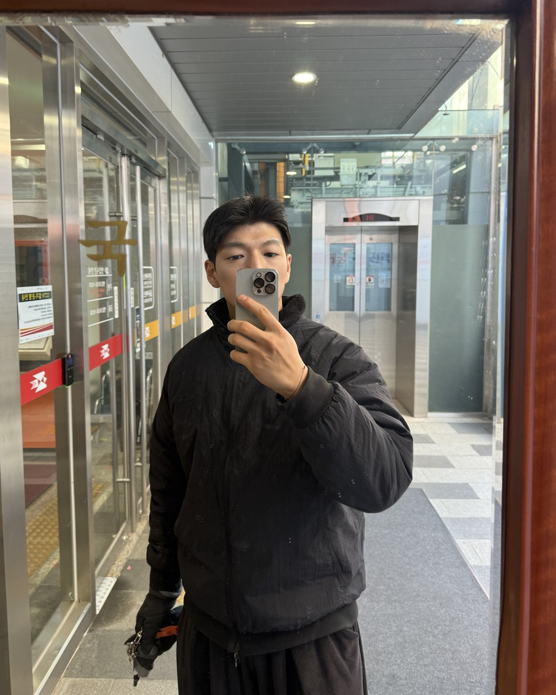
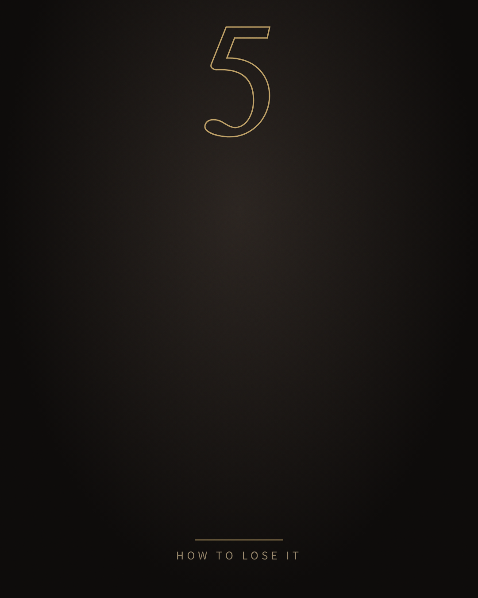
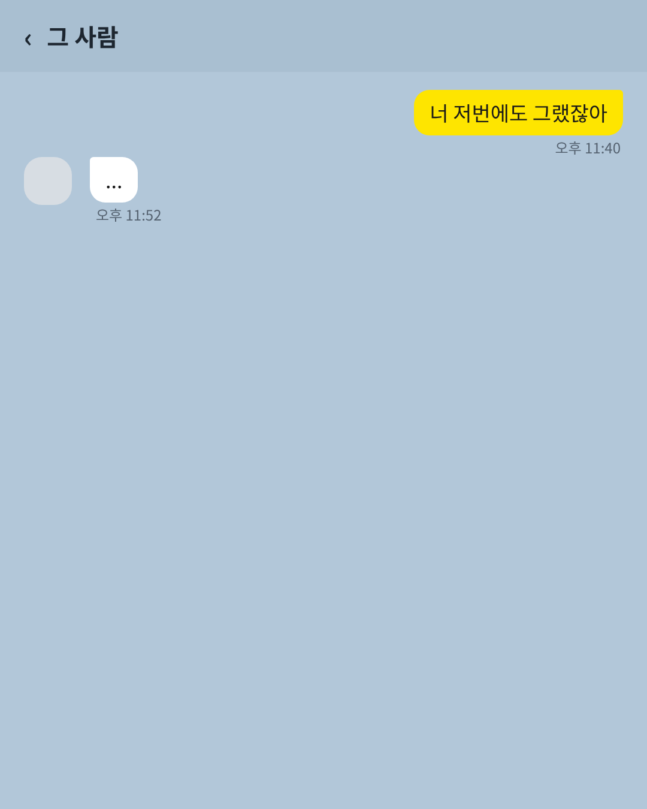
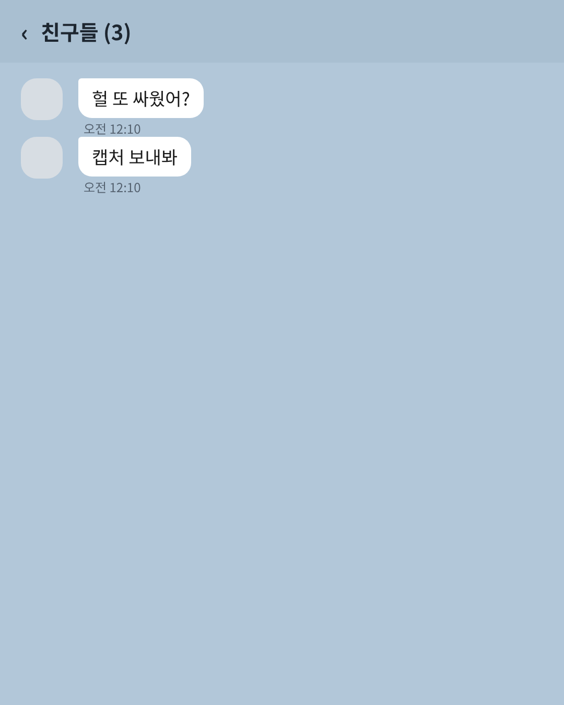
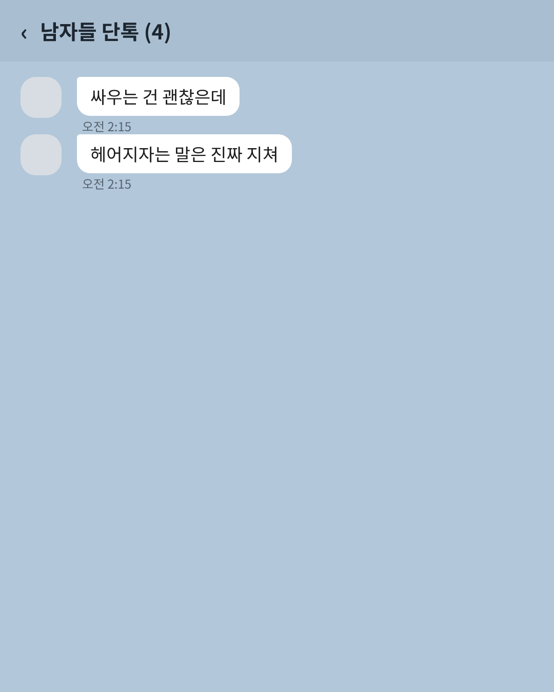
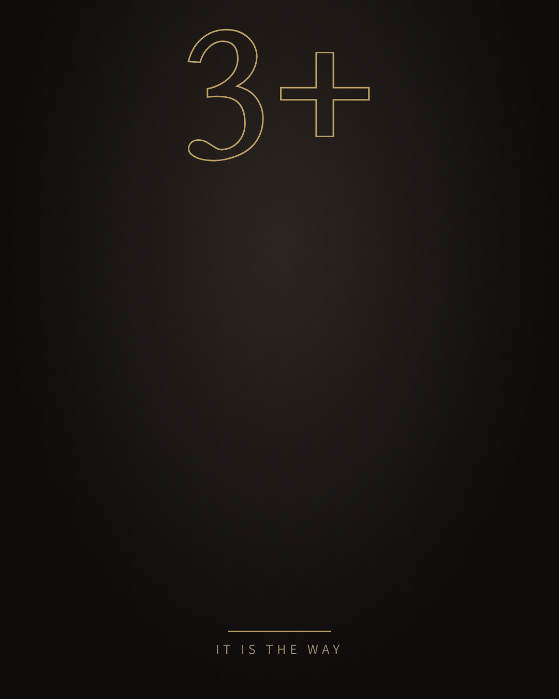
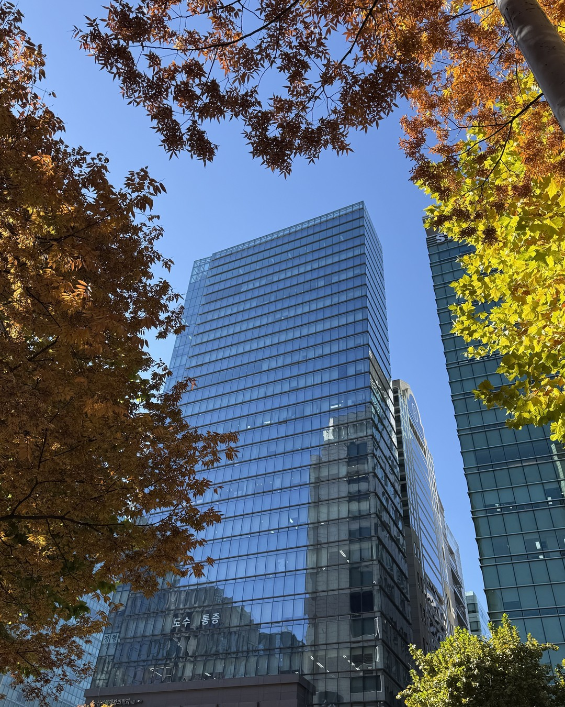
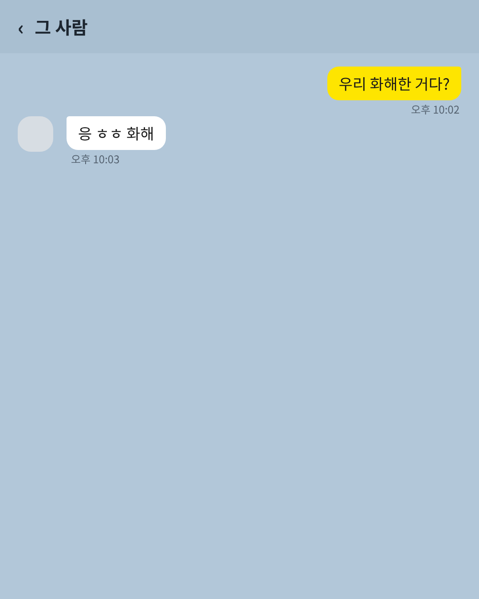
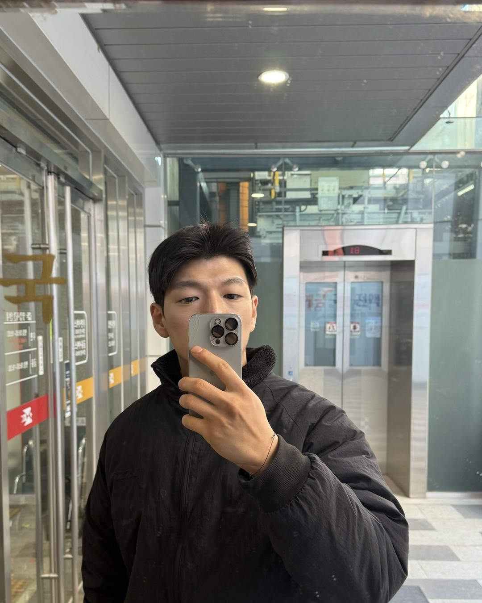

남자가 싸울 때마다
정이 떨어지게 만드는 법
(다섯 가지만 하면 돼요.)
1/14
@mszexc
넘겨보세요 →

정 떨어지게 하고 싶다면
아래 다섯 가지를 꼭 지키세요.
(반대로 하면, 싸워도 정은 남아요.)
2/14
@mszexc
남자들끼리 하는 말 #73

첫 번째.
지난 일까지 전부 꺼내세요.
("너 저번에도 그랬잖아." 한 번이면 충분해요.)
3/14
@mszexc
남자들끼리 하는 말 #73

남자는 과거 얘기가 나오면
지금 문제를 풀 의욕을 잃어요.
(이길 수 없는 싸움이 되거든요.)
4/14
@mszexc
남자들끼리 하는 말 #73

두 번째.
"됐어"로 대화를 끝내세요.
(그리고 그가 알아서 풀어주길 기다리세요.)
5/14
@mszexc
남자들끼리 하는 말 #73

세 번째.
친구 단톡에 실시간으로 중계하세요.
(둘만의 싸움이 공개 재판이 돼요.)
6/14
@mszexc
남자들끼리 하는 말 #73
네 번째.
"헤어져"를 무기처럼 쓰세요.
(진심이 아닌 걸 알아도, 남자는 기억해요.)
7/14
@mszexc
남자들끼리 하는 말 #73

남자들끼리는 이렇게 말해요.
"싸우는 건 괜찮은데, 헤어지자는 말은 진짜 지쳐."
(그 말은 다음 싸움 때 다시 떠올라요.)
8/14
@mszexc
남자들끼리 하는 말 #73
다섯 번째.
화해한 다음 날, 또 꺼내세요.
(끝난 싸움을 다시 열면, 끝이 없다고 느껴요.)
9/14
@mszexc
남자들끼리 하는 말 #73

몇 개 해당되나요?
세 개 이상이면, 싸우는 방식이 문제예요.
(사랑이 아니라 방식이 정을 깎아요.)
10/14
@mszexc
남자들끼리 하는 말 #73

반대로 하면 이렇게.
"지금 이 얘기만 하자. 나 이게 서운했어."
(지금 일 하나 · 내 기분 하나만.)
11/14
@mszexc
남자들끼리 하는 말 #73

그리고 끝낼 땐
"화해"라고 분명히 말해 주세요.
(남자는 끝난 줄 알아야 마음을 놓아요.)
12/14
@mszexc
남자들끼리 하는 말 #73
싸워서 멀어지는 게 아니라
싸우는 방식 때문에 멀어져요.
13/14
@mszexc
남자들끼리 하는 말 #73

이것만 기억하세요.
싸움은 사랑을 깎지 않아요. 싸우는 방식이 깎아요.
남자가 하는 말의 뜻은 전자책 1·2권에 · 프로필 링크에서 무료로 받아보세요
14/14
@mszexc
남자들끼리 하는 말 #73